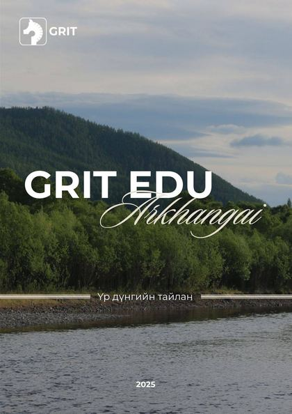
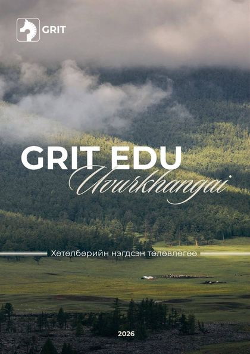

Library
Research & articles
Our research, reports and plans, and what we learn from our work in rural Mongolia.
Research preprint
From Belief to Navigation
Why do so few students from Mongolia’s provinces reach international scholarships? Self-efficacy, navigational capacity and perceived financial barriers.
ReadResearch preprint
Location, School or Family?
Are rural schools in Mongolia really weaker than schools in the capital? A survey of 2,567 students at 107 schools.
Read
Report
GRIT EDU Arkhangai: Results report
One year after the 2025 Ugiinuur program: survey of 16 graduates on English level, study plans and long-term impact.
Read
Plan
GRIT EDU Uvurkhangai: Program plan
The full plan for the 21-day summer camp for 30 students in Kharkhorin.
ReadNew research
From Belief to Navigation: Self-Efficacy, Navigational Capacity, and Perceived Financial Barriers in Mongolian Provincial Students’ Aspirations and Actions Toward International Scholarships
Why do so few students from Mongolia’s provinces reach international scholarships? Cost is the reason students name most often, but our data point elsewhere. In a discovery sample of 258 secondary-school students and a preregistered confirmatory sample of 59, self-efficacy, students’ belief in their own ability, was the strongest predictor of aspiring to study abroad, while perceived financial barriers predicted neither aspiration nor preparatory action. The proposed role of navigational capacity (advice, contacts and knowledge of application steps) was supported in the first sample but not confirmed in the second.
Usukhgerel, B., Tumurbaatar, Y., & Demberel, E. (2026). From belief to navigation: Self-efficacy, navigational capacity, and perceived financial barriers in Mongolian provincial students’ aspirations and actions toward international scholarships [Preprint]. Zenodo. https://doi.org/10.5281/zenodo.24303670
New research
Location, School or Family? A Multilevel Analysis of Regional Educational Inequality among Secondary School Students in Mongolia
Are rural schools in Mongolia really weaker than schools in the capital? Many families move their children to Ulaanbaatar believing so. In a survey of 2,567 students in grades 9–12 at 107 schools across 28 of Mongolia's 30 provinces and capital districts, school location did not predict how students rated their teaching, exam preparation or school resources once family circumstances were taken into account, and plans to attend university were similar everywhere (68–74%). What mattered more was the family and the individual school: parental involvement predicted every outcome, more than half of students reported no working science laboratory, and about 30% of the differences in resources lay between individual schools rather than regions.
Demberel, E., Usukhgerel, B., & Tsenddorj, U. (2026). Location, school or family? A multilevel analysis of regional educational inequality among secondary school students in Mongolia [Preprint]. Zenodo. https://doi.org/10.5281/zenodo.24304294
Contact
Have a question, want to volunteer, or support our work? Write to us. We would love to hear from you.
- gritedu22@gmail.com
- Phone
- +976 8804-3548
- @grit_edu_
- GRIT